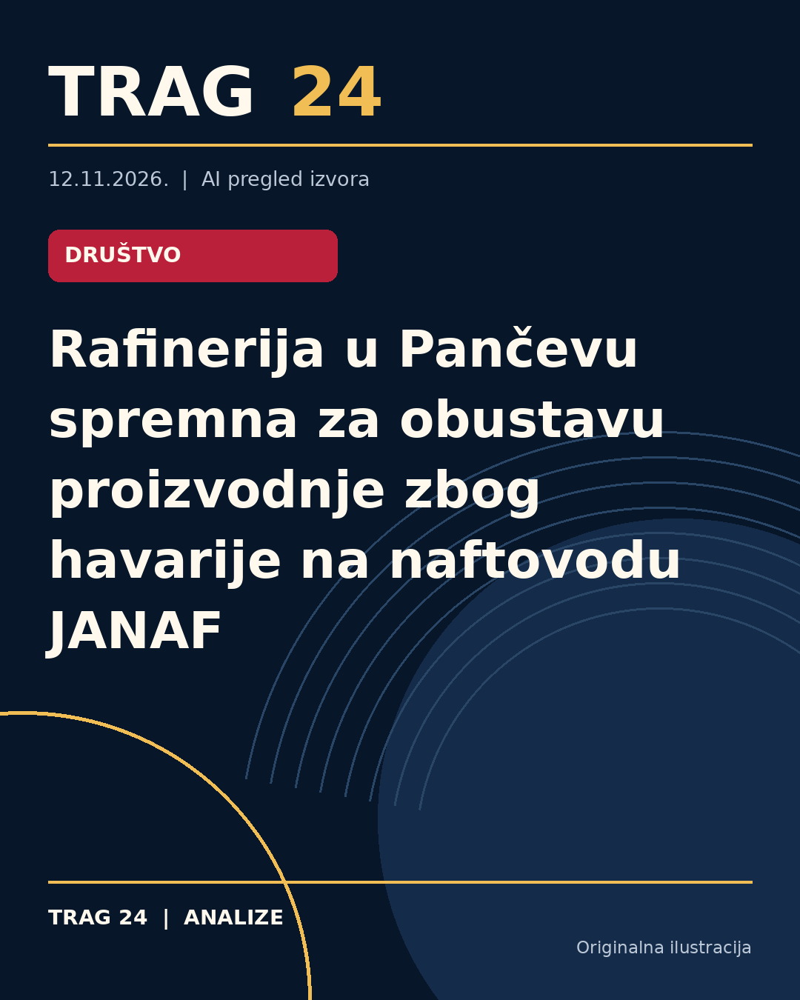

Rafinerija u Pančevu spremna za obustavu proizvodnje zbog havarije na naftovodu JANAF

ŠTA SE DOGODILO
Rafinerija nafte u Pančevu smanjila je proizvodnju naftnih derivata i priprema se za potpunu obustavu proizvodnje. Razlog je prekid transporta sirove nafte naftovodom JANAF usled havarije na cevovodu između Siska i Slavonskog Broda, pri čemu je došlo do havarije koja je prouzrokovala isticanje oko 500.000 litara nafte.
HRONOLOGIJA
Prekid transporta sirove nafte desio se 6. novembra. Nakon tog incidenta, kompanija JANAF je 9. novembra saopštila da je sva istekla nafta prikupljena i vraćena u sistem. Istovremeno traju radovi na sanaciji oštećenja i eliminisanju posledica zagađenja. Rafinerija je, shodno informacijama o očekivanom trajanju radova, smanjila proizvodnju sirovih derivata, dok se obustava proizvodnje priprema, sa mogućim početkom u decembru, kada bi sanacija trebala biti završena.
ŠTA NAVODE IZVORI
Iz izvora N1 navodi se da je obustava proizvodnje u Rafineriji neizbežna, ali precizan datum nije definisan. JANAF ističe da su radovi na sanaciji u toku, ali ne precizira rokove završetka. Naftna industrija Srbije (NIS) navodi da pažljivo prati situaciju, da raspolaže dovoljnim zalihama naftnih derivata i da su benzinske stanice uredno snabdevene. Takođe, NIS u saopštenju tvrdi da je u stalnom kontaktu sa nadležnim državnim organima i JANAF-om i da se preduzimaju aktivnosti za prevazilaženje trenutnih problema i očuvanje stabilnosti snabdevanja.
ŠTA JE POTVRĐENO
Potvrđeno je da je transport sirove nafte naftovodom JANAF prekinut od 6. novembra zbog havarije na cevovodu i da su usled havarije iscurile velike količine nafte. Takođe, potvrđeno je da su radovi na sanaciji u toku, kao i da je rafinerija smanjila proizvodnju i da se sprema na obustavu. NIS ima zalihe goriva i prati situaciju u skladu sa razvojem događaja.
ŠTA NIJE POTVRĐENO
Nije potvrđeno kada će tačno biti završena sanacija naftovoda i kada će transport sirove nafte biti uspostavljen. Takođe, nije zvanično potvrđen tačan datum početka potpune obustave proizvodnje u rafineriji, već se radi o proceni da će se to desiti pre početka decembra.
ŠTA OSTАJE OTVORENO: Otvoreno je pitanje konačnog trajanja radova na sanaciji naftovoda i postupka povratka u normalan režim transporta sirove nafte. Takođe, ostaje nepoznato kada će tačno rafinerija u Pančevu zaustaviti proizvodnju, kao i da li će biti dodatnih mera za sanaciju ili ublažavanje posledica prekida u snabdevanju.
Izvori
- https://vreme.com/drustvo/rafinerija-pancevo-obustava-proizvodnje-nafta-janaf-gorivo-energetika/
- https://www.danas.rs/vesti/ekonomija/rafinerija-pancevo-janaf-obustava-proizvodnje/
- https://nova.rs/vesti/biznis/rafinerija-u-pancevu-sprema-se-za-obustavu-proizvodnje-zbog-havarije-na-janaf-u/
Ova analiza je pripremljena uz pomoć veštačke inteligencije na osnovu javno dostupnih izvora. Navodi izvora nisu nužno nezavisno potvrđeni.